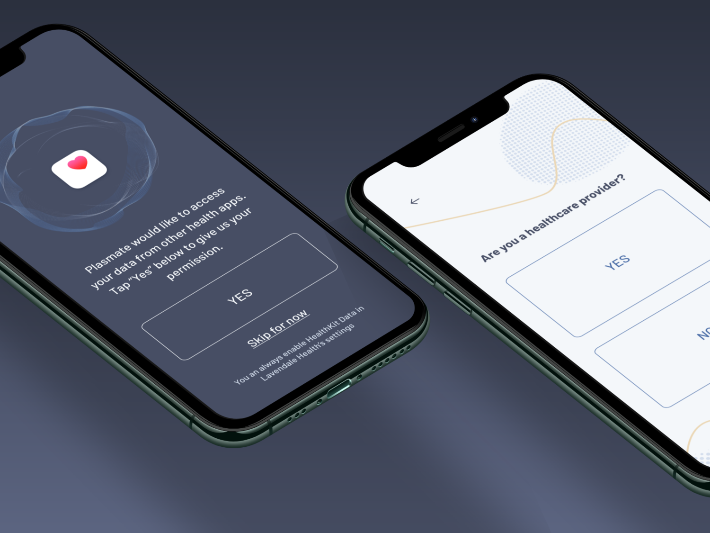
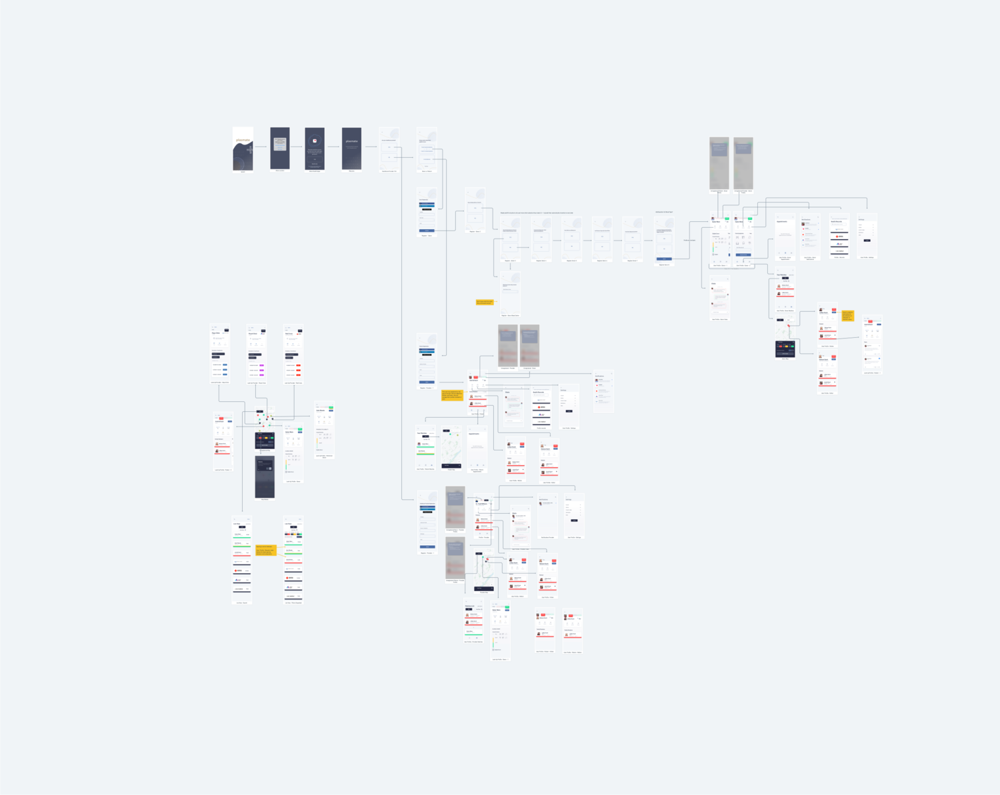
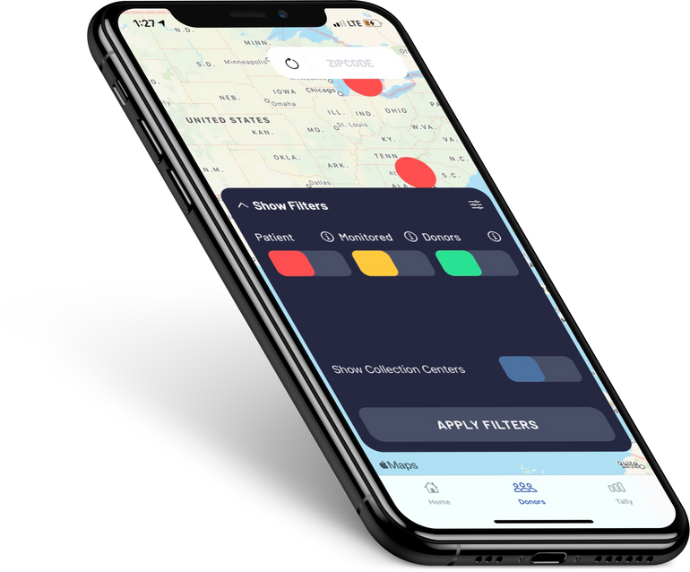
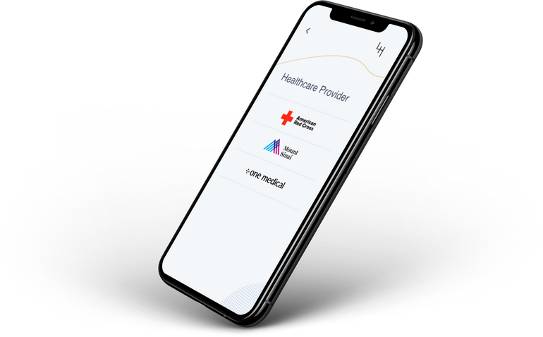
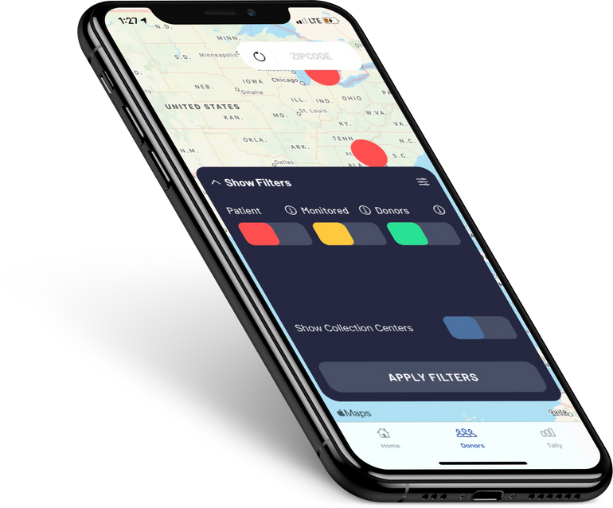
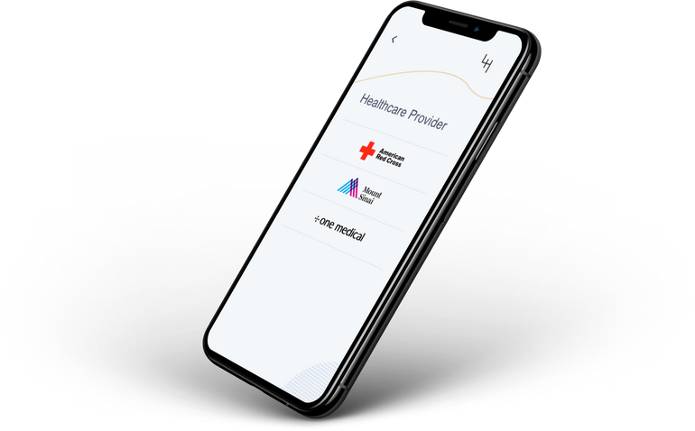

Quindarius

A DIGITAL PRODUCT THAT CONNECTS HEALTH PROVIDERS AND COVID-19 PATIENTS TO SUITABLE PLASMA DONORS.
Background
Margret Santiago, currently had on on going startup called Lavendale. The start up was getting biodegradble plastics to and from buisnesses and to transform those plastics into soil. She had patents for the bioreactor for the plastics, and a CTO for the software side of the buisness logic.
I called her to discuss what a cool idea it was and how I wished I could be apart of it. At the time they did not need my help but she kept me in here back pocket. I went on the develop Political Platform, an application that gave you information about political candidates, and continued my ongoing work at Apple. During this time I was also a full time student, and Vice President of the Speech and Debate Team for Kennesaw State University.
Later on, I call Margret about leaving Apple. I was in a Technical Support Role at the time and thought that by then I can use my software development skills to further myself in the workplace. She convinced me to leave Apple and come work for her. Her CTO recently left and there was a lot of work to be done as she was meeting with investors constantly.
Work
While in school I managed to build the iOS Application for the delivery service of biodegradables. There were a lot of cool features that I had to build into the application. The map view, the scheduling, view of the scheduling just to name a few. But of course this application did not end up becoming a biodegradable delivery service did it? Nope there was a major pivot during the beginning Covid-19.
After the pivot not much of the code transferred over so it was a fresh start. I built out the backend server which really just constituted of a FHIR Server at the time. Rebuilt the iOS Application. Managed to work with a couple great engineer and designers. Mainly Mitch Masia, for the help with bearer authentication, Uri Bombasi, for the awesome design work. As things wound down the company had sure footing I started the process to handing my work off to consulting team. The rest after on boarding them I left the organization. I created a multi-page Requirements Document that as a software engineer not a technical writer I am pretty proud of.
Tools Used(Abridged)
- Swift
- XCode
- UIKit
- SwiftUI
- Core Data
- URLSessions
- Combine
- FHIR Standards
- Node/express
Media Kit
  


